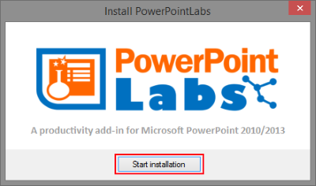
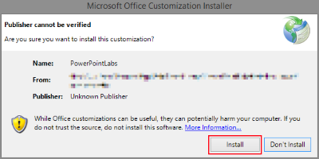
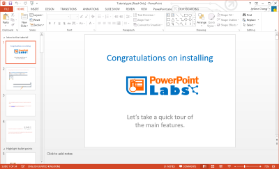

PowerPointLabs is a plug-in that works with Microsoft PowerPoint 2010 and above. There're just a few easy steps you need to follow to get started.
Register for free to get the PowerPointLabs installation bundle here. We'll send you an email with the download link after registration.
First, quit PowerPoint before beginning the installation process. Extract the files in the downloaded bundle to a convenient location, then double-click
setup.exe
to begin.
You should see the following window:

Click the
Start installation
button to continue. The following screen should appear - click on Install to start installing.

Once installation has completed, PowerPoint will launch and open our tutorial file.

If you need more help, check out our documentation to get a detailed walkthrough of how to put PowerPointLabs to work.
To uninstall PowerPointLabs, just follow the instructions here, and look for PowerPointLabs in the list of programs.